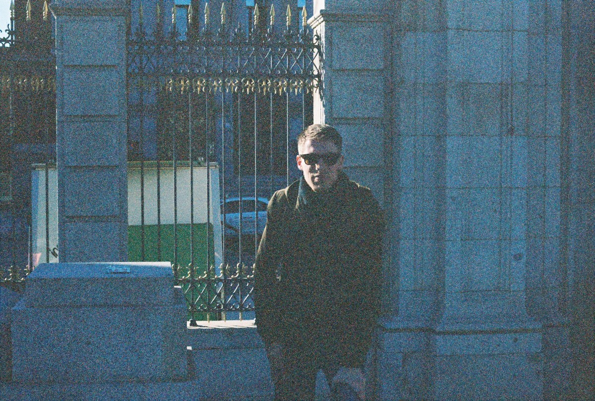

Hello. I am a transportation planner/analyst and musician based in Sacramento, CA. I currently work in the public sector*, primarily on issues related to transportation accessibility, equity, and project evaluation. I have a particular interest in open-source software (mostly in the R ecosystem). Some of the tools that I've worked on can be found on my GitHub. I've also been active in the local music scene for over ten years, both as a multi-instrumentalist and audio engineer. I can be reached by email at hhmckay@protonmail.com.
*Views/opinions expressed here do not represent those of my employer.
